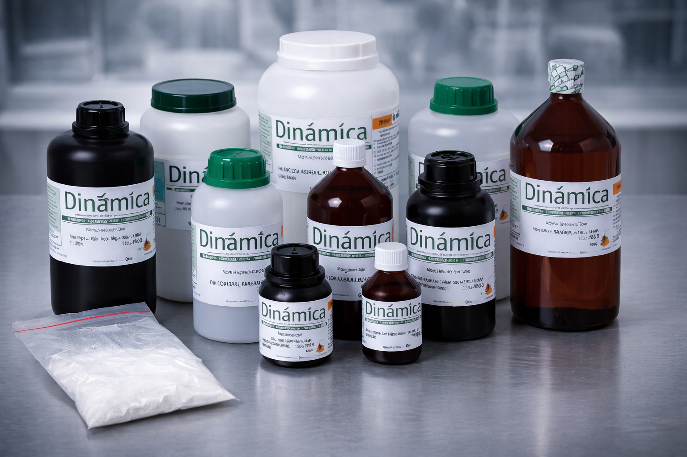
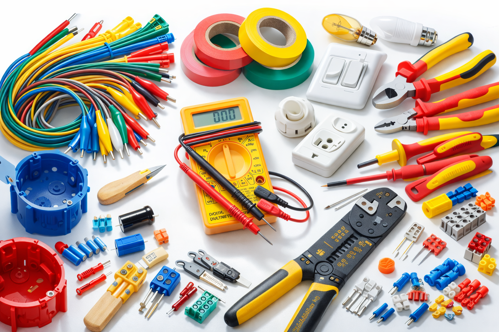
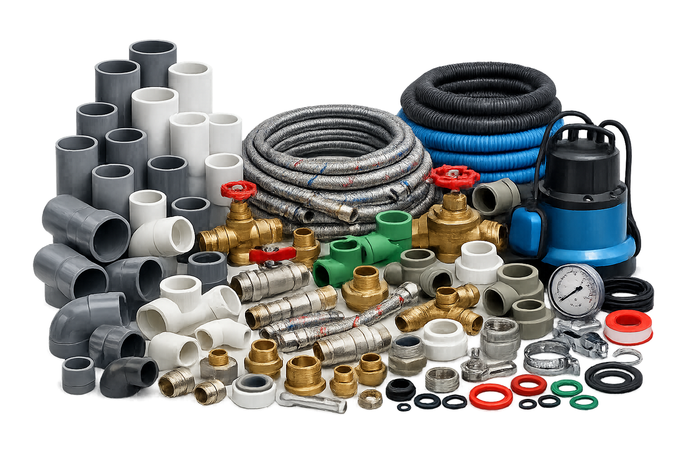
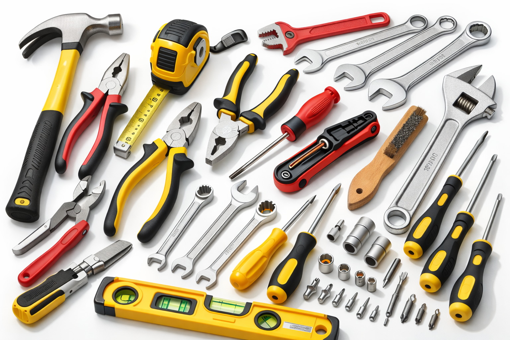

Sobre mim
Profissional com mais de 15 anos de experiência dentro do ramo logístico atuando hoje a nível analista.
Uma breve introdução
Comecei a trabalhar aos 16 anos de idade; aos 18, já havia saído de casa. Sempre me mantive ativo, afinal, meu sustento dependia apenas de mim. Por muitos anos, atuei no setor logístico, com muita afinidade e gosto pelo trabalho.
Com o passar dos anos, senti que eu tinha uma ótima bagagem de experiência prática, porém havia negligenciado a área acadêmica por muito tempo. Quando tomei a decisão de focar novamente nos estudos, decidi também mudar de área, e é por este motivo que você está lendo uma parte da minha história neste agradável site de apresentação.
Cursei três semestres de Análise e Desenvolvimento de Sistemas, além de diversos cursos extras. Programação sempre foi um hobby de infância que posteriormente decidi levar a sério. Meu início foi exatamente no período pós-pandemia, quando o setor estava enfrentando uma queda de empregos com o retorno dos trabalhos presenciais, enquanto, simultaneamente, ocorria um aumento exponencial de novos talentos na área de programação.
Somado a isso, percebi que eu me sentia muito mais produtivo e útil nos antigos empregos do que tentando me mostrar minimamente capaz para um simples estágio em programação. Durante esse período, um dos estudos à parte aos quais retornei foi o inglês, ao qual, com o passar dos meses, percebi estar muito mais apegado do que à programação.
Minha virada de chave foi quando decidi unir minhas capacidades atuais com minhas projeções e esforços para o futuro. Hoje atuo novamente no setor logístico, sendo um grande entusiasta do estudo de idiomas e cursando Comércio Exterior.
Minha realidade atual é de aprimoramento teórico e prático constante, em que busco evoluir na minha área com muito amor pelo que faço e aprendo, com a ambição de me tornar um profissional cada vez mais capacitado e impactante, seja qual for o ambiente empresarial.
Hoje sou uma pessoa com objetivos claros, metodologias funcionais e anos de experiência, com acertos e falhas que moldaram minha maturidade e preparo para focar no futuro, crescendo junto a pessoas e instituições que partilham da mesma visão.
- Nascimento: 14/11/1991(34anos)
- Estado civil: Solteiro(Sem filhos)
- Escolaridade: Ensino superior(Cursando)
- Fumante: Não
- Habilitação: A/B
- Residência atual: Campinas - São Paulo
Formação
Minhas formações, cursos e habilidades:
Comércio exterior
- Instituição: Anhanguera Educacional
- Status: Cursando
Análise e Desenv. Sistemas
- Instituição: Universidade Estácio
- Status: Trancado (3º semestre)
Técnico em Hardware
- Instituição: Senac SP
- Status: Concluído(2006)
Inglês Avançado
- Instituição: Autodidata
- Nível: B2 para C1
Escrita fiscal
- Instituição: Senac SP
- Status: Concluído(2024)
Pacote Office
- Instituição: Microcamp
- Status: Concluído(2003)
Excel Avançado
- Instituição: Udemy
- Status: Concluído(2025)
Power BI
- Instituição: Udemy
- Status: Concluído(2025)
Conhecimentos pessoais
Possuo algumas áreas em que atuei ativamente como hobbie ou dentro de empregos formais, porém sem um diploma ou certificado na área que particularmente acho relevante mencionar:
Eletrônica
Conhecimento em eletrônica para realizar leitura de valores, testes, montagens, etc.
Soldagem
Soldagem de componentes PTH e SMD em placas de circuito.
Ling. de Programação
Possuo nível básico e intermediário em algumas linguagens de programação e ferramentas como: HTML/CSS, JavaScript, C++, Phyton e React.
TI
Serviçõs gerais de TI, redes, manutenção de micros e impressoras, formatação, etc.
Minhas experiências profissionais
Meu histórico de registros profissionais em carteira:
Analista de Almoxarifado
jan/2025-set/2025Empresa: KChurrasqueiras Gourmet
- Local: Campinas/Salto
- Funções: Conferência de qualidade(Verificar integridade de materiais, medidas conforme desenho da engenharia, composição do material, etc), supervisão de veículos da frota de entrega, auxílio nas entregas quando necessário para cumprimento de agenda diária. Realização de inventários, liderando equipe, conflitando resultados, filtrando e criando uma apresentação de resultados à gerencia. Alimentação/manutenção de dados no sistema e planilhas, práticas de refinamento e aprimoramento da informação. Contato direto com fornecedores, negociação de prazos, acompanhamento em processos de troca ou devolução. Contato direto com clientes, prezando em manter o atendimento e prestação de serviço no mais alto nível de excelência, elevando a imagem da empresa visando o crescimento regional com boas avaliações, indicações e novas compras futuras.
- Motivo de saída: Sede de Campinas fechada
Almoxarife
nov/2023-jan/2025Empresa: Sinergia Científica
- Local: Campinas
- Funções: Recebimento e despacho de mercadorias, conferência de NFs, atendimento de clientes e transportadoras no balcão, cotação de fretes, agendamento de coletas, separação de pedidos e preparo de materiais, conferência de pedidos, rotas e controle de frotas, acompanhamento de manutenção de equipamentos e calibração.
- Motivo de saída: Proposta de emprego
Almoxarife I
ago/2019-mar/2022Empresa: Equitronic Equipamentos Eletrônicos
- Local: Campinas
- Funções: Recebimento e conferência de volumes e nota fiscal, conferência interna de material próprio ou de terceiros conflitado e codificado com a nota fiscal, direcionamento de abastecimento para os demais setores, entradas de notas no sistema, organização e manutenção do estoque, separação de pedidos e ordens de serviço, inventários e operação de maquinário de corte de cabos.
- Motivo de saída: Objetivos pessoais de mudança de área
Estoquista
fev/2018-mar2019Malwee Malhas LTDA
- Local: Campinas
- Funções: Abertura e fechamento de caixa, realização de depósitos e envios de malotes, atendimento ao cliente, vendas e caixa, organização de estoque e loja, recebimento e conferência de mercadorias, entrada e saída de notas fiscais, realização de transferências entre lojas.
- Motivo de saída: Unidade fechada
Estoquista
mai/2017-dez/2017Empresa: Leme Produtos Naturais LTDA
- Local: Campinas
- Organização de estoque, conferência de mercadoria/pick-list/nota fiscal, controle PEPS, baixas de irregularidades/defeitos, realização de inventários mensais, contagens parciais semanais.
- Motivo de saída: Proposta de emprego
Estoquista/Caixa
out/2013-mar/2016Empresa: Interbelle Comércio de Produtos de Beleza
- Local: Campinas
- Estoquista: Organização de estoque, controle FIFO, pedidos de abastecimento/devolução, sistema SAP, emissão/conferência de notas fiscais, recebimento e despacho. Caixa: Atendimento personalizado ao cliente, vendas em caixa, atendimento e finalização de compra com sistema online de compras/cartão, abertura e fechamento de caixa, controle de cofre semanal, agendamento de malotes para carro forte
- Motivo de saída: Troca de residência Campinas - Paulínia
Auxiliar de conferente/conferente
out/2011-mar/2013Empresa: Campinas Comércio e Logística
- Local: Campinas/
- Conferência de pedidos e notas fiscais, montagem de paletes e despacho de pedidos, uso de paleteiras e transpaleteiras, controle de entrada e saída de materiais/estoque/pedidos, conferência de devoluções com entradas manuais de produtos no sistema e rotinas de produção (Embalagem, etiquetagem e armazenamento).
- Motivo de saída: Desligamento. Baixa extrema de pedidos e clientes em começo de ano.
Estágio(Conferente/arquivista)
fev/2010-out2011Empresa: Caixa Econômica Federal
- Local: Campinas
- Analisar, conferir e arquivar documentos, formulários impressos, auxiliar na conferência e preparação de documentos, orientar clientes no auto-atendimento, auxiliar nas anotações em ficha ou arquivo eletrônico, arquivamento e desarquivamento de fichas, processos e documentos em geral
- Motivo de saída: Fim de contrato de estágio
Estágio(Estoquista)
mai/2008-out/2008Empresa: Colomarti Comércio de Ferramentas
- Local: Campinas
- Organização e manutenção de estoque, conferir listas e pedidos, separação pedidos e entrega a clientes, conferência de entregas e auxílio externo nas entregas da loja.
- Motivo de saída: Conflito com horário escolar
Materiais
Alguns dos materais os quais já trabalhei, adquirindo experiência e me tornando habituado a todos os procedimentos de manuseio, armazenamento e preservação:
Químicos

Produtos químicos de alto risco, controlados pela polícia civil e polícia federal que precisam de um controle de estoque preciso, com rastreio de todo o histórico do material.
Vidrarias
Vidrarias regulares e especiais para laborátorios de pesquisas e exames, mantendo todo o cuidado de manuseio e preparo de embalagens para resistir à jornada de entrega.
Hospitalar
Armazenamento limpo e seguro, controle de validade e de preservação de embalagem, mantendo a esterelização e integridade do material para seu uso.
Componentes

Manuseio e armazenamento eficiente, evitando misturas. Por se tratar de material extremamente pequeno e parecido, onde um único zero ou faixa de cor podem comprometer todo um projeto.
Elétricos

Conhecimento de nomes e materiais específicos, tipos de cabos, etc.
Hidráulicos

Conhecimento de toda a linha de materiais.
Ferramentas

Conhecimento de toda a linha de materiais.
Cosméticos
Armazenamento consciente, mantendo validade, regra do FIFO, inspecionando umidade e temperatura do ambiente
Tecidos
Conhecimento de tipos de tecido e boas práticas de armazenamento.
Objetivos
Minhas áreas de atuação desejadas:
Operacional
Controle e manutenção de estoque, planejamento e execução de inventários totais/parciais, recebimento e despacho com conferência de materiais e notas fiscais. Boas práticas de organização, limpeza e metodologias ágeis. Acompanhamento e execução de entregas. Rotinas de produção: separação de pedidos, preparo de materiais, paletização, movimentação e conferência de integridade.
Operacional/Administrativo (Híbrido)
Além das responsabilidades operacionais: administrar fornecedores, níveis de estoque, integrar ou auxiliar no time de compras, realização de pedidos e cotações. Integrar ou auxiliar setor fiscal, emissão de NF, conferência, planejamento de fluxo de faturamento e prioridades de forma ampla em ambos os setores. Integrar ou auxiliar frota da empresa, revisando rotas e funcionalidade da agenda diária.
Analista
Controle de logística no nível mais alto. Negociar com fornecedores atuais/novos, atuando como representante da empresa, solicitar cotações e mediar negociação de pedidos. Criar/administrar rotinas de manutenção preventiva de máquinas/veículos, gestão de frotas com planejamento de rotas e análise de custos. Contato direto com clientes-chave, mantendo um nível de excelência no relacionamento. Manter ou criar toda cadeia de armazenamento dos dados numéricos da empresa, analisando a saúde geral da empresa e transformando dados brutos em material apresentável em reuniões para avaliações de metas de vendas, resultados, esforços de economia e aprimoramentos através de apresentações dinâmicas e claras com planilhas e gráficos de indicadores.
Contato
Entre em contato comigo através de email, telefonema, whatsapp, redes sociais ou aqui mesmo pelo site. Retornarei seu contato o mais breve possível
Email:
desk2off@gmail.com
Telefone:
19 99273-9440
Localização:
Campinas - São Paulo